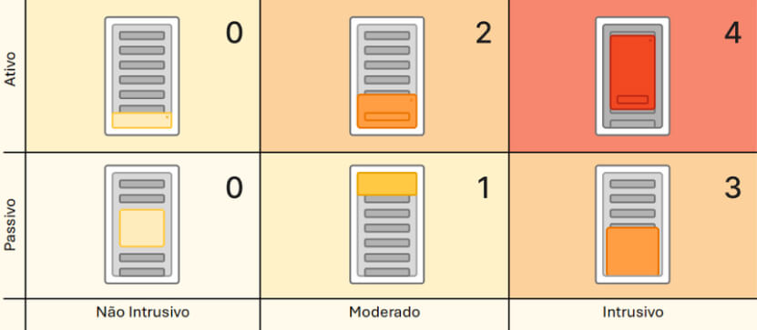
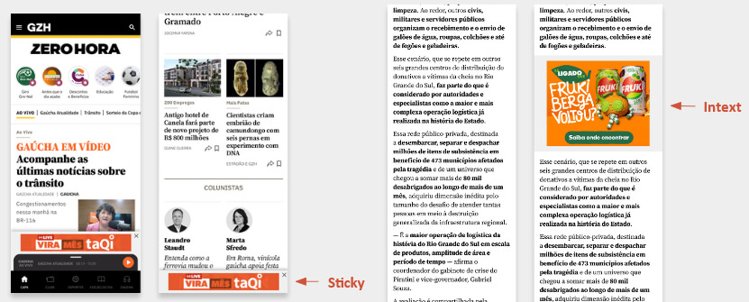

01Contexto
GZH operava com densidade de publicidade abaixo dos principais concorrentes, como CNN, Estadão e G1. Havia espaço claro para crescer receita programática. Ao mesmo tempo, o produto já carregava atritos conhecidos: publicidades, pop de assinatura e vídeo flutuante coexistindo na mesma experiência.
O problema não era "onde cabe mais publicidade". Era onde dava para crescer sem cobrar esse crescimento da confiança do usuário.
02Processo
Conduzi um benchmark estruturado com 12 veículos nacionais e internacionais, mapeando posições, formatos e densidade de publicidade de cada um. Apliquei a Matriz de Atritos, framework próprio, para classificar o custo de experiência de cada formato. Por fim, cruzei o diagnóstico qualitativo com a viabilidade técnica e o potencial de receita de cada posição.

03Decisões e tradeoffs
- Recomendei avançar com Sticky Banner e novas posições de Intext. Formatos de alto potencial de receita com atrito controlado, validados no comportamento dos concorrentes.
- Recomendei não avançar com Interstitial no app. A receita imediata não compensava o custo de experiência em um produto sustentado por assinaturas. Dizer não a uma posição rentável exigiu argumentar com dados, não com princípios de design.
- Trouxe à mesa o risco de canibalização entre receita B2B e B2C. Cada real de publicidade que corrói a experiência ameaça a receita de assinatura. Colocar essa conta na discussão mudou o critério de decisão.
04Resultado
- Os testes de fevereiro a maio trouxeram receita incremental de R$ 700 mil
- Projeção de receita incremental na casa de R$ 2 milhões no ano
- Aumento pontual de reclamações sobre excesso de publicidade
- Porém apenas 2 cancelamentos de assinatura motivados por isso
O resultado validou a tese central: crescer receita e proteger a confiança do usuário não são objetivos opostos quando as decisões são tomadas com critério explícito.
